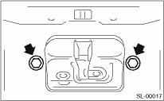

1. Disconnect the ground cable from the battery.
2. Remove the rear gate trim. 
3. Remove two bolts.

4. Remove the rear gate latch assembly and disconnect the connector.
5. Remove the rear gate outer handle cable, and then remove the rear gate latch assembly.